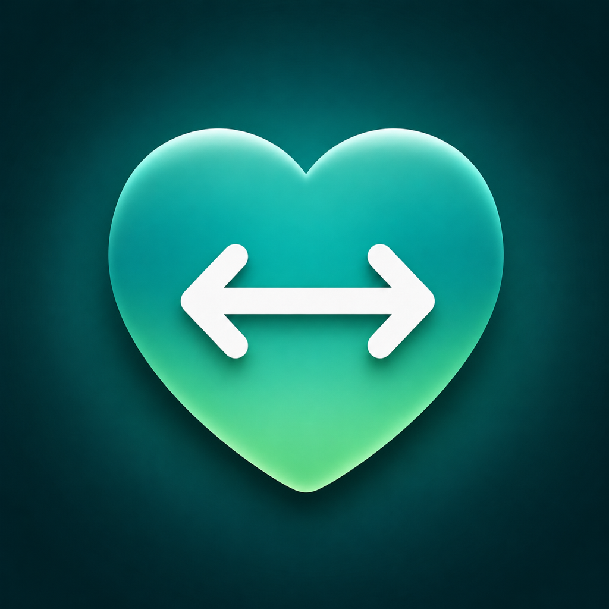

Apple 健康 ↔ 首页 Assistant
Apple 健康与您的智能家居之间的隐私优先桥梁。在 30 秒内将您的健康数据推送到 首页 Assistant 仪表板 — 或反向拉取传感器数据。没有中间商,没有服务器,没有账户。

Healko 是唯一开箱即用支持双向同步的 HK ↔ HA 应用。
Apple 健康到 首页 Assistant。
首页 Assistant 传感器到 Apple 健康。
由 HA 用户设计,为 HA 用户服务。
直接与您的 首页 Assistant 通信。中间没有 Healko 服务器。URL 和令牌仅保存在 iOS 钥匙串中。
HKObserverQuery 会在后台唤醒应用,数据一记录就立即推送。
本地网络或 Nabu Casa 云。可在家庭 Wi-Fi、蜂窝网络以及跨网络工作。
英语、中文、意大利语、俄语、德语、韩语、葡萄牙语、西班牙语、日语 — 发布时全部支持。
"Force Sync Now", "What's my heart rate?", "Pause sync for an hour" — all built in.
v1.0 已支持 Watch 数据流转。Watch 独立应用将在 v1.1 推出。
在连接 HA 之前,使用合成数据试用整个应用。无需任何设置。
无账户。无分析。无第三方服务器。您的健康数据从未离开手机与 HA 之间的路径。
免费版本货真价实。Pro 解锁完整功能。
5 项指标、手动同步、基础仪表板。
全部 38 项指标、反向桥接、快捷指令库。
与月付相同,按年计费。
包含全部 Pro 功能,无周期性扣费。最适合不喜欢订阅的 HA 用户。
设置、故障排查以及 Healko 背后的理念
一部运行 iOS 17 或更新版本的 iPhone,Apple 健康至少正在记录一项指标(Apple Watch 会更好),以及一个运行中的 首页 Assistant 实例 — 本地网络或 Nabu Casa 云。无需创建账户,无需邮箱注册。
在 首页 Assistant 中:点击个人资料图标(侧边栏左下角)→ 滚动到个人资料页面底部 →“长期访问令牌”→“创建令牌”→ 命名为“Healko”→ 复制令牌。将其粘贴到 Healko 的设置屏幕。无论本地连接还是 Nabu Casa 云连接,同一令牌都有效。
两种都可以。本地(例如 http://homeassistant.local:8123)更快,不占用互联网带宽 — 但仅当 iPhone 与 HA 在同一 Wi-Fi 时有效。Nabu Casa 云(https://abc12345.ui.nabu.casa)随处可用 — 蜂窝网络、出行等。许多用户会同时添加两个 URL 并切换。Healko 始终使用您当前配置的 URL。
有。在欢迎屏幕点击“跳过 — 使用演示模式”。应用会填充合成数据,让您无需任何 HA 设置或 HealthKit 权限即可进入“今天”/“趋势”/“设置”。适合在投入前进行评估。
通常从 Apple 健康记录样本起 30 秒内出现。Healko 使用 HKObserverQuery 配合 enableBackgroundDelivery,因此即使屏幕关闭 iOS 也会唤醒应用。后台传输是机会性的 — 如果手机处于低电量模式或散热限制下,iOS 可能略有延迟。
v1.0 支持 38 项,涵盖:活动(步数、距离、活动/基础能量、运动分钟、推车次数、爬楼层数、步行速度、步幅),生命体征(心率、静息心率、HRV SDNN、血压、血氧、体温、呼吸频率),身体(体重、BMI、体脂率、瘦体重、身高、腰围),睡眠(分析阶段、卧床时间),营养(饮水、咖啡因)等。设置屏幕中列出全部。
Apple 的 HKObserverQuery + enableBackgroundDelivery 有实际开销(电量、内核队列深度),会随观察类型数增加。我们将免费用户限制在 5 项,以确保旧机型流畅。Pro 解除该限制。
不会。每次指标 POST 都从您的 iPhone 直接通过您配置的 URL 发送到您的 HA 实例。Healko 没有任何后端。Healko 的对外请求仅有:(a) 您的 首页 Assistant,(b) 如果您选择开启,会请求 ipinfo.io 用于公网 IP 查询。无分析,无遥测,无 AI 云。
您将一个 HA 传感器(如 sensor.bedroom_scale)映射到 Apple 健康指标(如体重)。Healko 按照您选择的频率(10 秒/30 秒/5 分钟)轮询 HA 传感器,数值变化时向 Apple 健康写入新的 HKQuantitySample。样本会标注 HA 实体 ID,在 Apple 健康中可以清楚看到每条读数来自哪个传感器。反向桥接是 Pro 功能。
仅存储在本设备的 iOS 钥匙串中。具体使用 kSecAttrAccessibleAfterFirstUnlockThisDeviceOnly,即令牌在静态加密,仅在设备开机后首次解锁后可用。它永远不离开您的手机。
为应用功能收集健康数据,不与身份关联,不用于追踪。这是唯一勾选的类别。Healko 没有分析、广告或第三方 SDK。
没有。没有账户、邮箱或密码。Healko 仅存储您的 HA URL 和令牌。可在“设置”中随时断开,清除两者。
免费版:正向 5 项同步指标、手动同步、完整仪表板。Pro 版:全部 38 项指标、反向桥接、完整快捷指令库、优先推送时序、Watch 功能上线即可用。
一次性 $79.99 非消耗性购买,在您的 Apple ID 关联的所有设备上永久解锁 Pro 功能。无周期性扣费。包含当前和未来全部 Pro 功能。为不喜欢订阅的 HA 用户设计。
可以。在 Apple ID 设置中取消订阅(月付会持续到当期结束),然后单独购买终身版。Apple 目前不提供订阅与一次性购买之间的“升级抵扣”机制,但一两年后总账划算。
最常见原因:
http:// 或 https://)和端口。本地:http://homeassistant.local:8123。云端:https://abc.ui.nabu.casa(不带端口)。您的令牌对此 HA 实例无效。在 HA 中:个人资料 → 长期访问令牌 → 检查令牌是否仍存在,或生成新令牌。注意:重新创建现有令牌会使旧令牌失效 — 请将新令牌粘贴到 Healko 中。
HA 的 REST API 实体仅存活于运行时内存 — 重启 HA 会清除它们。打开 Healko → 设置 → “立即将所有指标推送到 HA”。这将重新推送每个启用的指标,实体立即重新出现。Healko 也会在应用前台时自动推送来应对此情况。
打开应用一次以唤醒。iOS 可能因以下原因暂停了 Healko 的后台权限:(a) 低电量模式,(b) 散热限速,(c) 您从多任务切换器强制退出应用(会禁用后台直到下次启动)。重新打开始终可恢复同步。
在“设置 → 指标同步”中检查该指标是否已启用。如果是 Healko 支持但 Apple 健康没有数据的指标(无历史数据),Healko 就没有可推送的内容。佩戴您的 Apple Watch,或在 Apple 健康 → 浏览 → 添加数据 中添加测试数据,然后触发手动同步。
Apple 设计上隐藏读取权限状态 — 即使您在引导中授予了权限,Apple 健康 → 来源 → Healko 才显示实际读取的内容。如果某项类型为关闭,请在那里启用。
反向桥接在前台或应用运行时进行轮询。iOS 最终会暂停长期运行的轮询。Pro 功能包含更长寿命的后台任务。如果某个传感器停止出现在 Apple 健康,打开 Healko 一次 — 始终会重启轮询。
演示模式会短路所有真实 HK 读取和 HA 写入 — 不应触发任何真实通知。如果遇到,请将您的 iOS 版本和截图发送至 arevalo.andy@gmail.com。每个版本都会回归测试演示模式覆盖范围。
“设置 → 断开并重新引导”。这将清除设备上保存的 HA URL 和令牌,并再次显示欢迎屏幕。HealthKit 权限保留在 iOS 设置中 — 前往“设置 → 健康 → Healko”可完全撤销。
Healko 是 HA 社区一直期待的桥梁。iOS 17+,免费开始,$79.99 终身版。